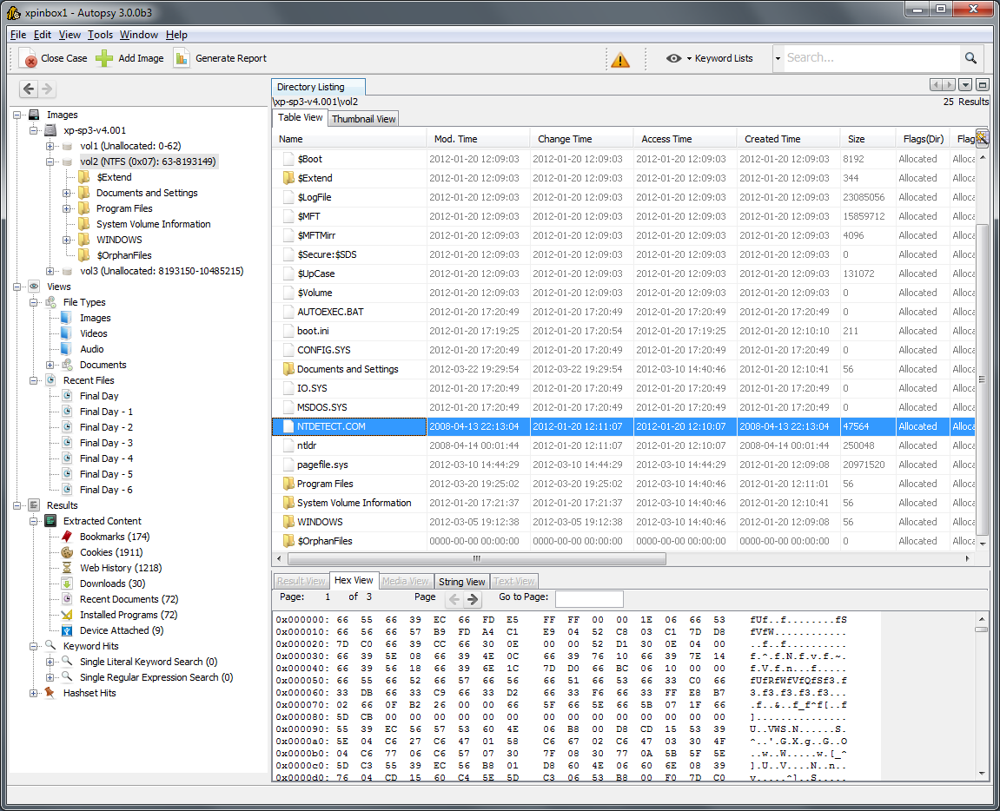
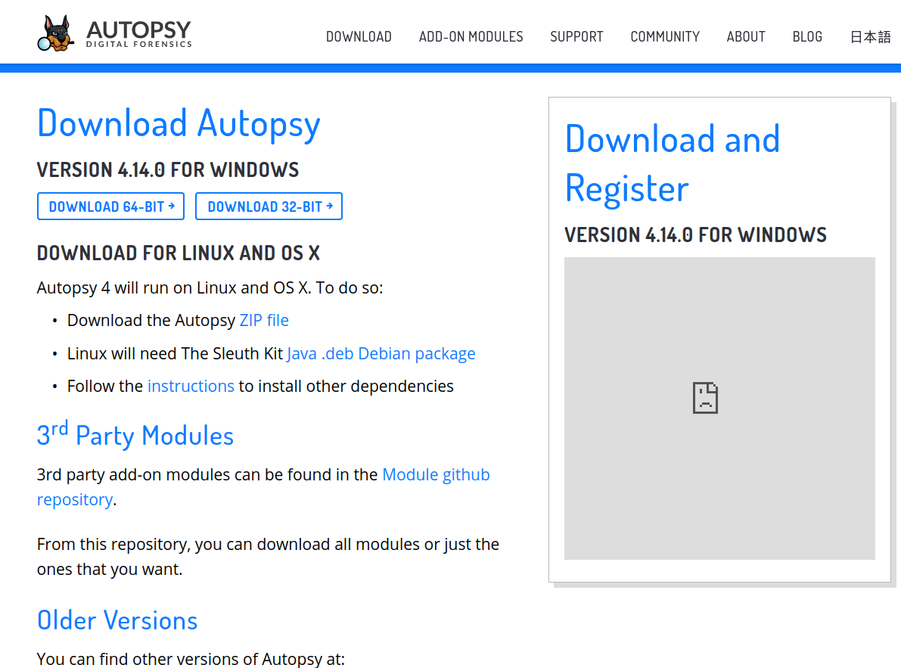

在Kali Linux中安装磁盘镜像工具Autopsy 4
Autopsy是Kali Linux中预安装的磁盘镜像分析/取证软件。Autopsy基于The Sleuth Kit的开源电子取证工具。Autopsy在The Sleuth Kit的基础上增加了图形界面，大大增加了易用性。
那么问题来了：Kali明明都自带了那么还要装一遍做甚？！原因是这样的：截止到现在的最新版（Kali 2019.4），Kali自带的Autopsy均是Autopsy 2. Autopsy 2通过Web服务器-客户端的形式来呈现用户界面，但是使用起来其实存在不少的限制，无论是功能还是界面都存在着不足。看下图感受一下：
而从Autopsy 3起, 程序移植成为了基于Java的应用程序。而Autopsy 4则在Autopsy 3的基础上，提升了多人协作的能力。

不难发现，Autopsy 4无论从用户界面，还是软件的功能性来说，都相较于Autopsy 2有了明显的提升。然而，关于Autopsy 4的中文文档却相当的不足。所以，通过这篇博文来记录安装的各个步骤以及遇到的问题。
Autopsy下载
在Autopsy首页 下载。页面仅支持英语与日语。

点击 ZIP file 链接，下载Autopsy的Linux安装包。
点击 Java .deb Debian package 链接，下载 The Sleuth Kit Java库安装包。
安装依赖文件
以下这些步骤，仅需要在第一次安装Autopsy时执行。如果Autopsy已经存在，但你依旧希望安装其他的版本，那这些步骤不需要再执行一遍。
安装 testdisk
1 | sudo apt-get install testdisk |
安装 BellSoft Java 8 JRE 和 JavaFX 8 发行版
- 安装 BellSoft Java 8
1 | wget -q -O - https://download.bell-sw.com/pki/GPG-KEY-bellsoft | sudo apt-key add - |
- 配置JAVA 环境变量
1 | export JAVA_HOME=/usr/lib/jvm/bellsoft-java8-full-amd64 |
注意：可能需要注销并重新登录使JAVA环境变量配置生效
- 确认当前运行的JAVA版本
1 | richard@richard-Kali:~$ java -version |
安装The Sleuth Kit Java库
Autopsy 4 依赖于特定版本的 The Sleuth Kit。所以我们需要安装基于特定Java版本的Sleuth Kit安装包：
使用我们在第0步下载获得的sleuthkit-java_4.8.0-1_amd64.deb (具体文件名可能根据版本发生变化)。
1 | sudo apt install ./sleuthkit-java_4.8.0-1_amd64.deb |
安装Autopsy 4
解压下载的Autopsy 压缩包。通过cd命令进入Autopsy目录。
1 | cd autopsy-4.14.0/ |
执行unix_setup.sh来完成Autopsy配置。
1 | sh unix_setup.sh |
执行Autopsy 4
进入bin目录，执行
1 | ./autopsy |
此时，Autopsy 4应该可以顺利执行了。